Tasarımınızı Fotogerçekçi Anlatın
Görselleştirme bir süsleme değil, karar aracıdır. Konsept eskizinden final animasyona kadar uzanan hattı; V-Ray, Corona, Lumion, Enscape ve Vantage ile projenizin temposuna göre kuruyoruz.

Görselleştirmede tek bir doğru araç yoktur; belirleyici olan projenin hangi aşamasında olduğunuzdur. Tasarım devam ederken hızlı geri bildirim gerekir; sunum aşamasında ise fotogerçekçilik ve kontrol öne çıkar.
Chaos V-Ray, ödüllü ışın izleme motoruyla yüksek uçlu görselleştirme ve prodüksiyon işlerinin karşılığıdır; milyarlarca poligon ve binlerce ışık içeren sahneleri kaldırır, CPU ve GPU'yu birlikte kullanır. Chaos Corona mimari görselleştirmede sadeliğiyle, Chaos Vantage ise %100 ışın izlemeli gerçek zamanlı gezinti ve doğrulama ile devreye girer.
Lumion tarafında öncelik hızdır: SketchUp, Revit ve Archicad eklentileriyle modelleme aracının içinden gerçek zamanlı geri bildirim alınır, geniş varlık kütüphanesiyle bağlam hızla kurulur. Cadbim, bu araçları birbirinin alternatifi olarak değil, tek bir hattın farklı hızlardaki durakları olarak konumlandırır.
Tasarım aşaması
Enscape ve Lumion View ile modelleme ortamının içinden anlık görsel geri bildirim; tasarım akışı bölünmez.
Sunum ve pazarlama
V-Ray ve Corona ile fotogerçekçi still görseller, malzeme ve ışık üzerinde tam kontrol.
Gerçek zamanlı sunum
Chaos Vantage ile ışın izlemeli gezinti; müşteriyle canlı oturumda değişiklik gösterme.
Renk ve son işlem
ACEScg gibi açık standartlarla renk yönetimi; Adobe Creative Cloud ile son işlem ve sunum paketleme.
Fotogerçekçi Render
V-Ray ve Corona ile prodüksiyon kalitesinde görsel üretimi; motor seçimi ve üretim hattı kurulumu.
Gerçek Zamanlı Görselleştirme
Enscape, Vantage ve Lumion ile canlı sunum ve anlık tasarım geri bildirimi.
AI Destekli Konsept
Veras ve Firefly ile eskiz, dakikalar içinde konsept görsele dönüşür; alternatifler erken aşamada çoğaltılır.
Animasyon & Tur
Kamera turları, 360° panorama ve VR sunumları.
Render Donanımı
HP Z iş istasyonları ile GPU/CPU render yapılandırması.
Ekip Yetkinliği
3ds Max eğitimi (ATC) ve render iş akışına uyum desteği; hat, ekibinizin alışkanlığına yerleşene kadar takip edilir.
Görselleştirme kurulumunun her adımında devreye giren yazılım ve donanımlar.

M&E Collection
Medya ve eğlence prodüksiyonu için gerekli tüm Autodesk araçlarını tek pakette sunar.

3ds Max
Modelleme, animasyon ve render için profesyonel 3D yazılımı.

Chaos V-Ray & Enscape
Chaos'un mimari render motorlarıyla fotogerçekçi görseller üretin.

Chaos Corona
Mimari görselleştirmeye odaklanan, kolay öğrenilen fotogerçekçi render motoru.

Chaos Vantage
Sahnelerinizi gerçek zamanlı ışın izleme ile anında keşfedin.

Lumion Marka Sayfası
Tüm Lumion planlarını ve ürün ailesini tek sayfada karşılaştırın.
Lumion View
Tasarım modelinizi çalışırken gerçek zamanlı olarak görselleştirin.

Substance 3D
Malzeme ve doku üretimi için Adobe'nin 3D tasarım araç seti.

Creative Cloud
Photoshop, Illustrator ve daha fazlasını içeren Adobe uygulama paketi.

HP Z Workstation
Büyük modelleri ve render işlemlerini hızlandıran güçlü iş istasyonları.
Sanatsal Baskı Atölyesi
Render çıktılarınızı yüksek kalitede sanatsal baskıya dönüştüren atölye hizmeti.
Aynı araç seti, disipline göre farklı şeyi kanıtlamak için kurulur — hattı işinize göre yapılandırıyoruz.
Mimari Görselleştirme
Konsept eskizinden satış görseline; fiziksel tabanlı ışık, malzeme ve kamera ile gerçeğe en yakın sonuç. V-Ray ve Corona bu alanın endüstri standardı.
İç Mimarlık
Küçük hacimlerde doğru ışık ve malzeme her şeydir. Kumaş, cam ve metal davranışının doğru çözülmesi, mobilya ve kaplama seçiminin ekranda kararlaştırılması.
Peyzaj Görselleştirme
Bitki örtüsü, mevsim ve büyüme senaryoları; geniş dış mekân sahnelerinin proxy nesneler ve dağıtık render ile yönetilmesi.
Kentsel Planlama
Kütle çalışmaları, gölge ve siluet analizleri; imar ve kamuoyu sunumları için geniş ölçekli sahnelerin okunur biçimde anlatılması.
Film & TV VFX
Prodüksiyonda kanıtlanmış render; binlerce ışık ve milyarlarca poligonun kaldırılması, Alembic ve OpenColorIO gibi açık standartlarla hatta oturması.
Sanal Prodüksiyon
Gerçek zamanlı ışın izlemeli sahne keşfi; kamera açısı ve ışık kararlarının çekim öncesinde canlı oturumda alınması.
Otomotiv
Class-A yüzey denetimi, kaplama ve renk varyantları; stüdyo ve dış ortam sunumlarının aynı sahneden türetilmesi.
Ürün Tasarımı
CAD verisinden pazarlama görseli; ambalaj, malzeme ve etiket denemelerinin fotoğraf çekimine gerek kalmadan yapılması.
Beş adımlı uygulama metodolojimizle sürecin tamamını yönetiyoruz: ihtiyaç analizi, kurgu, devreye alma, yaygınlaştırma ve sürdürme.
Görsel Dil Keşfi
Portfolyonuz ve hedef kaliteniz üzerinden görsel standart belirlenir.
Motor & Donanım Seçimi
İş tipinize göre render motoru ve HP Z donanım profili yapılandırılır.
Sahne Şablonları
Işık, kamera ve malzeme preset'leriyle stüdyo şablonlarınız kurulur.
Ekip Eğitimi
Modelleme-render-post akışında rol bazlı eğitim verilir.
Üretim Hattı
Teslim formatları ve revizyon akışıyla sürdürülebilir üretim kurulur.
Yüzlerce kurulumdan damıtılmış, işleyen iyi uygulama setimiz.
Sahne şablonu kütüphanesi
Her proje sıfırdan başlamaz; ışık ve kamera preset'leri hazırdır.
Ortak varlık kütüphanesi
Onaylı model/malzeme kütüphanesi (Cosmos vb.) ekipçe paylaşılır.
Doğru renk yönetimi
Monitörden baskıya tutarlı renk; müşteri ekranında farklı görünmez.
Erken müşteri onayı
Clay/draft render ile kompozisyon onayı alınır; final emek boşa gitmez.
GPU/CPU iş dağılımı
Interaktif işler GPU'da, final kareler farm'da — bekleyen sanatçı olmaz.
Revizyon disiplini
Versiyonlu teslim ve işaretlemeli geri bildirimle döngü kısalır.
Aradığınız yanıt burada yoksa uzmanımıza doğrudan sorabilirsiniz.
Lumion mu, V-Ray mi almalıyım?
Render için nasıl bir bilgisayar gerekir?
Revit modelimi doğrudan kullanabilir miyim?
Eğitim veriyor musunuz?
Görselleştirme projelerini yürüttüğümüz sektörler ve iş akışları.
Tedarik sürecin başlangıcıdır; kurulum, lisanslama, kullanıcı eğitimi, teknik destek ve yenileme yönetimi tek muhatap üzerinden yürütülür.
Esnek Abonelik ve Lisans Modelleri
Tek ve çok kullanıcılı abonelikler, 1 ve 3 yıllık dönemler, koleksiyon avantajı — kullanım profilinize uygun planı birlikte belirliyoruz.
Yetkili Eğitim Merkezi (ATC)
Autodesk Yetkili Eğitim Merkezi olarak sertifikalı eğitimler; İzmir merkez ofisimizde sınıf ve çevrim içi programlar.
Türkçe Teknik Destek
Kurulum, lisans yönetimi ve teknik sorularınızda Türkiye'den, Türkçe, aynı gün yanıt.
Kurulum, Lisanslama ve Aktivasyon Desteği
Yazılımların kurulum, lisanslama ve aktivasyon süreçlerinin tamamında teknik destek sağlıyoruz.
Sürücü ve Uyumluluk Çözümleri
İşletim sistemlerinde sürücü kurulumları ve yazılım uyumluluğu konularında teknik çözüm üretiyoruz.
Bu alanda destek alın
Teklif, danışmanlık veya Autodesk eğitimleri için iletişime geçin.